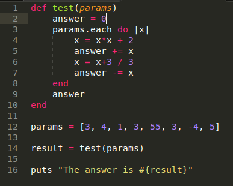
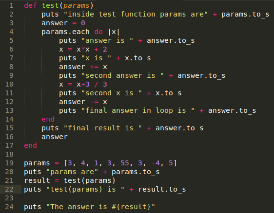
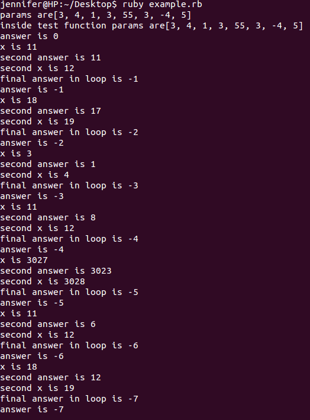
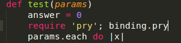
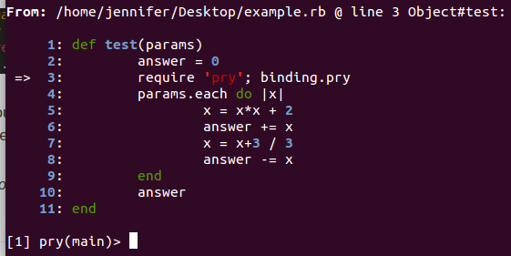
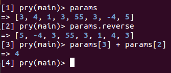
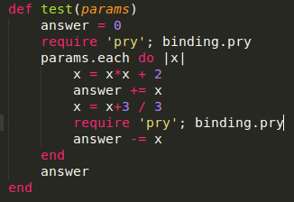
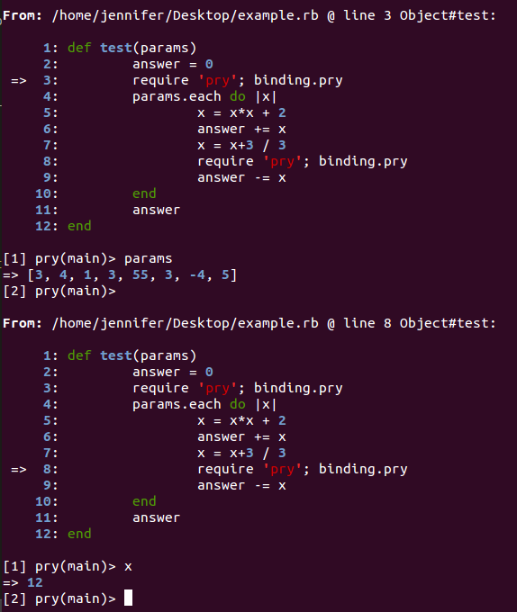

Debugging can be difficult, especially if you don't have the right tools. One of the most common ways of debugging is to insert print statements everywhere, run your program, and read the output to try to figure out the problem. You may have to run the program multiple times, changing your print statements each time to print out different variables or trying different functions. Oftentimes there are so many other logs printed out that it's difficult to even find your print statement's output in the first place.
Although this method of debugging works, it's very inefficient. There is a much easier way to debug while programming in Ruby: the Pry gem. First, make sure you have pry installed (type gem install pry into your console).
To demonstrate how to use Pry, I've created a very simple test program written in Ruby.
If I want to debug this using print statements, I would insert a bunch of "puts" with some helpful information. It might look something like this:
Then I would run the program and look at the output. It would look something like the screenshot below. Depending on the application, there might also be a ton of logs you need to sort through to even find the print statements.
As you can see, this makes the program pretty messy, and although it's possible, sorting through the print statements is tedious and time consuming. Instead, we can use Pry.
First, we'll start with one Pry statement. Where you wish to debug your program, insert require 'pry'; binding.pry.
Make sure you insert the statement in a line of code that the program runs over. Then run the program. When the program hits that line of code, it will stop, and look something like this:
The program is pausing at that line of code and now you can type things into the command line in order to debug. The little arrow on the left shows you where the program is stopped. You can type a variable to see its value, or even call a function on the variable to see its result.
To continue execution, press Ctrl + D. To stop execution and exit the program, press Ctrl + C.
Pry is even more useful when you insert multiple pry statements into your program. In this example, I'll insert a Pry statement at the beginning of the test function, and also one inside the loop.
Now when we run our program, it will stop at the first Pry statement. If we wish to continue debugging and check out the area of code near the second Pry statement, then we can press Ctrl + D and then debug again.
These are just the simplest Pry commands that I use the most often. There are many more uses for Pry detailed in its documentation that might come in handy for you. Using Pry instead of print statements for debugging has definitely made my life much simpler!
Questions? Comments? Don't hesitate to contact me!